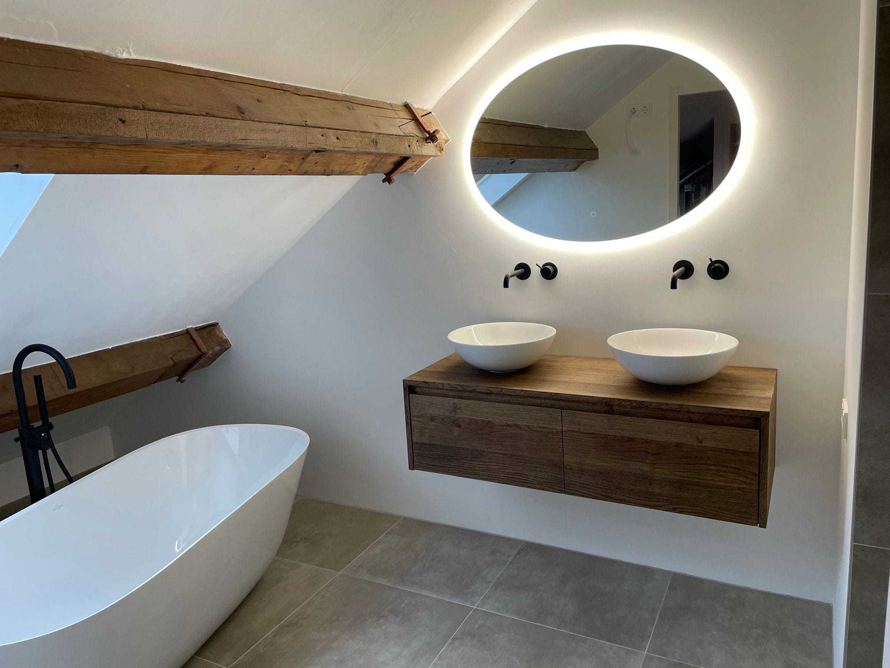

Complete badkamers
Voor een nieuwe badkamer heeft u al snel een loodgieter, elektricien, tegelzetter en soms een bouwkundige nodig. Wij doen het als totaalinstallateur allemaal in eigen beheer. U heeft één aanspreekpunt en de planning loopt soepel.
Samen stellen we de badkamer samen die u voor ogen heeft.
Bespreek uw badkamer